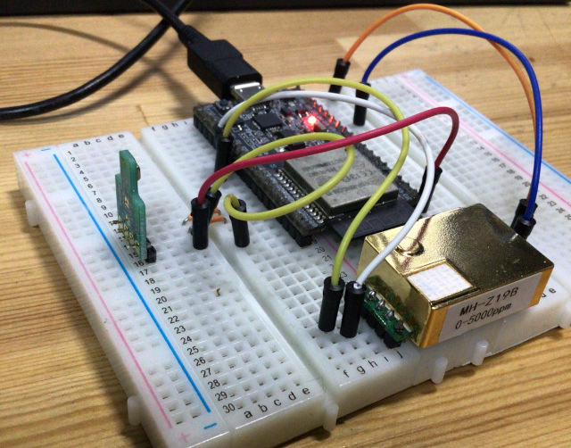
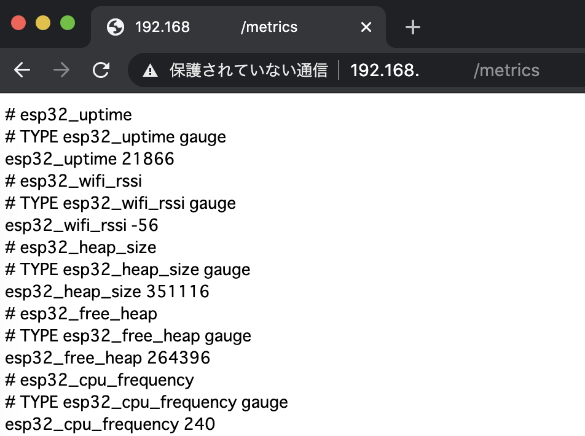
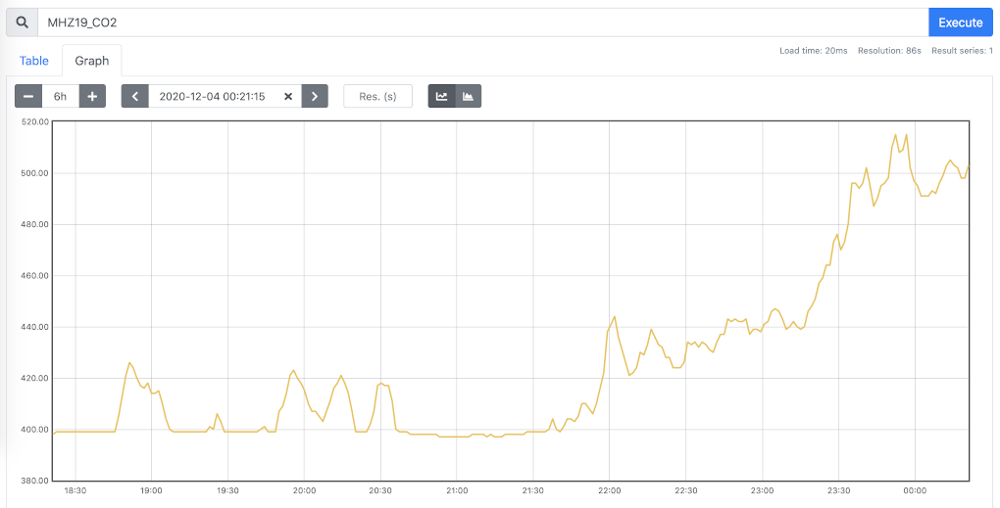
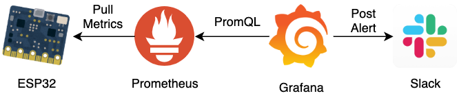
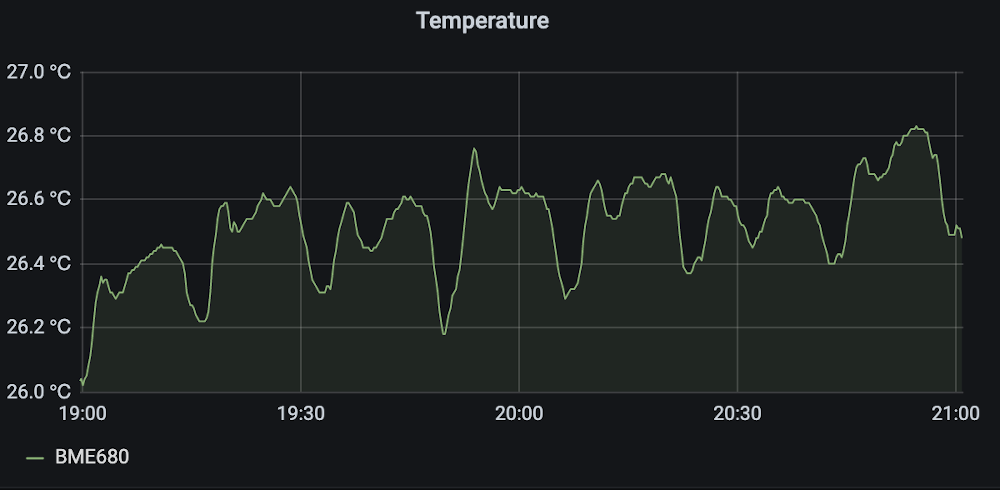

EPS32とPrometheusで作業環境のデータ収集している話
この記事は Akatsuki Advent Calendar 2020 5日目の記事です.
はじめに
アカツキでサーバエンジニアをしている Naoya kohda です。現在、在宅勤務をしているのですが、厚生労働省が在宅勤務の作業環境のガイドラインとして次のようにしています。
テレワークを行う作業場が、自宅等の事業者が業務のために提供している作業場以外である場合には、事務所衛生基準規則（昭和47年労働省令第43号）、労働安全衛生規則及び「情報機器作業における労働衛生のためのガイドライン」（令和元年7月12日基発0712第3号）の衛生基準と同等の作業環境となるよう、テレワークを行う労働者に助言等を行うことが望ましい。
要するに「在宅勤務するならオフィスと同じ様な環境になるように努力しろ」ということです。なので、作業環境が妥当か聞かれた時にすぐにエビデンスを出せるように、作業環境のデータを収集するセンサを作りました。
センサからデータの収集
仕様パーツ
マイコンにESP32 DevKitCを使いました。

Arduinoでも良かったのですが、デフォルトでWiFiが使えるのと安いから選びました。Arduino Core for the ESP32を使えばArduinoと同じ様に書き込みができます。ただloop()で処理を行うのでせっかくのデュアルコアを無駄にしている感があるのですが。
CO2センサは aliexpress で買ったMH-Z19Bを使いました。国内でだとamazonとかで購入できます。MH-Z19BはCO2センサの中では安く2000円台で入手できます。
温湿度センサは秋月電子で買ったBME680を使いました。

圧力、湿度、温度とガスの情報を計測できるセンサです。
MH-Z19Bはハードウェアシリアル経由、BME680はI2C経由で接続しました。
作ったものは下の画像のものです。(基板作るのが面倒くさくてブレッドボード上で動かしてます。) 
監視
ESP32で取得した値をM5 stack に付いているようなLCDディスプレイに表示させても良いのですが、
- 過去の情報も見たい
- CO2の濃度が高くなればどこかに通知したい
- 面倒くさいのでできれば楽な実装が良い
このような条件がありました。そのため、ディスプレイに表示するのではなく、何かしらのツールで監視する必要があります。
SaaS 系のメトリクス監視ツールがあるのですが、無料版だと制限があり、こんなお遊びにお金を払う価値があるのかという問題が出てきます。そのため、できればOSSなどで無料で使えるものが良いという条件が加わりました。
OSS の監視ツールとして有名なもののして Zabbix や Nagios、Munin などがありますが、今回は Prometheus を選びました。理由として、TSDB(時系列データベース)が Prometheus に内蔵されているため、1つのバイナリで動作します(Remote Storage にも対応していますが)。ため、他の監視ツールに比べ環境構築が非常に楽です。今回は Manjaro Linux 上で Prometheus を動かしたのですが、以下のコマンド1つでインストールが完了します。
yay -Syu prometheus
また、公式ページのアーキテクチャ図にある通り Pull 型の収集です。メトリクス公開側はリクエストに対して応答するシステムになるため、収集側の情報を保つ必要がなくなります(これでAPIキーをハードコーディングしなくて済む)。そのため、Prometheus に収集してもらうために exporter を作りました。[ソースコード]ESP32に対して GET リクエストを送った結果は下の画像の様になります。
また、Prometheus の設定としては/etc/prometheus/prometheus.ymlに次の様に収集対象の情報を足します。
scrape_configs:
- job_name: 'prometheus'
static_configs:
- targets: ['localhost:9090']
- job_name: 'EnvironmentalSensor'
static_configs:
- targets: ['IPAddress:Port']
ただ、Prometheus の欠点として収集したメトリクスの可視化に向いていない点です。実際、Prometheus で表示すると下の画像の様になります。
そのため、 可視化には Prometheus ではなく Grafana で可視化を行います。Grafana で可視化した画面は下の様な感じです。

これで作業環境が状態がすぐに分かるようになりました。また、Grafana 側で簡単に Slack などへの通知の設定を行えます。
そのため、全体的な構成図としては下のようになります。 
まとめ
- CO2と温度、湿度センサの値を ESP32 で値を読み取る
- Prometheus で収集する用の exporter を ESP32 側に実装する
- Prometheus のメトリクスデータを Grafana で可視化
余談
エアコンを付けていた時の室温のグラフなんですが、エアコンの温度制御がよく分かる。 
追記
温湿度センサ(BME680)のスペックシート眺めてたらこんなことが書いてあった。
| CO2 equivalents (ppm) | Estimation of the CO2 level in ppm. The sensor does not directly measure CO2, but derives this from the average correlation between VOCs and CO2 in human’s exhaled breath. |
|---|
BOSCHの公式ライブラリを使えば推定のCO2濃度が取れるらしい。CO2センサいらないじゃん。(最初にスペックシート読んでないことがバレてしまった。そもそも公式のライブラリがあるとは知らなかった。)